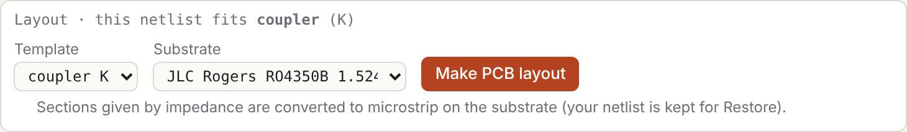
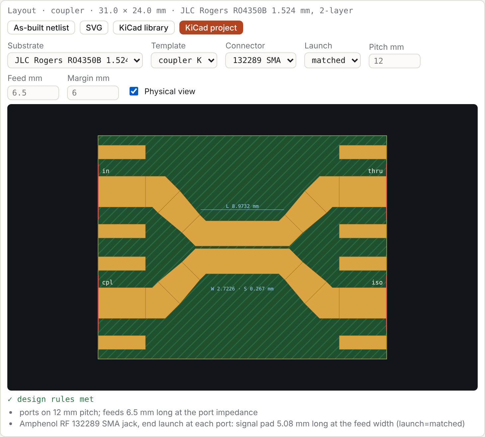
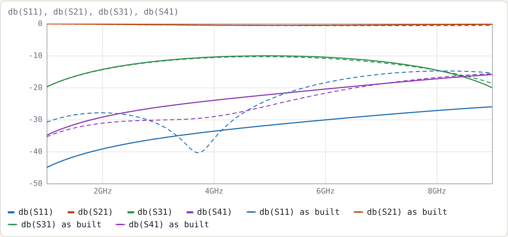
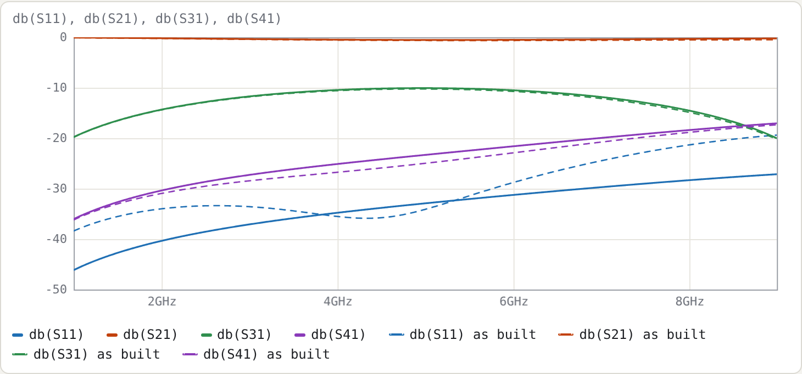

8. From a coupler netlist to a KiCad board
This example takes the 10 dB coupler of Example 2, which is defined only by its even/odd impedances, and turns it into a KiCad 9 project with edge-launch SMA connectors. Nothing is typed into the netlist: every step uses the layout panel.
Netlist: examples/coupler-10dB-microstrip.cir
1. The offer
The netlist has no .layout line. Its topology, one coupled pair with a port at each of its four ends, fits the coupler template, so the panel offers a layout:

Choose a substrate and press Make PCB layout. The panel then:
- Writes
.substrate jlc-ro4350b-1.524after the header. - Converts the section to microstrip. The even/odd impedances come from the section's Maxwell matrices, Z0e = √((L11 + L12)/(C11 + C12)) and Z0o = √((L11 − L12)/(C11 − C12)), and the coupled-microstrip synthesis then finds W and S for them on the substrate. Here Z0e 69.40 / Z0o 36.00 Ω becomes W 2.7226 mm, S 0.267 mm. The
Zeoline is removed;len 90degand the port wiring stay. - Adds
.layout coupler K.
Your previous netlist is kept: the notice above the status line has Restore it.
2. The panel

| control | writes |
|---|---|
| Substrate | .substrate ID. It also re-synthesises W and S so the sections keep their impedances on the new substrate. |
| Template | .layout TYPE SECTIONS…, from the templates the topology fits |
| Connector, Launch | connector= and launch= (§8.4 of the manual); the defaults are omitted |
| Pitch, Feed, Margin | pitch=, feed=, margin= in mm; blank uses the connector-derived default, shown greyed |
| Physical view | nothing in the netlist; adds the as-built response to the plots |
KiCad project downloads the board (manual §8.3). KiCad library downloads the part alone (§8.2).
3. Physical view: what will actually be built
With Physical view on, every plotted trace gets a dashed twin, computed from the as-built netlist. That netlist covers:
- the connector pads (
launch=matched) and their launch placeholders; - the feeds;
- the W → feed-width tapers;
- the diagonal escapes from the coupled lines.
At 5 GHz on the two RO4350B thicknesses:
| 1.524 mm: bare section | 1.524 mm: as built | 0.508 mm: bare section | 0.508 mm: as built | |
|---|---|---|---|---|
| W / S | 2.7226 / 0.267 mm | 0.8831 / 0.1025 mm | ||
| S11 | −31.78 dB | −23.72 dB | −32.91 dB | −34.10 dB |
| S31 (coupling) | −10.07 dB | −10.34 dB | −10.07 dB | −10.25 dB |
| S41 | −22.19 dB | −25.60 dB | −23.31 dB | −24.98 dB |
| board | 31.0 × 24.0 mm, 0 stitching vias | 33.1 × 24.0 mm, 20 stitching vias |

On 1.524 mm the as-built match is 8 dB worse than the bare section's. The reason is the size of the copper relative to the wavelength. The coupled lines are 2.7 mm wide and the 50 Ω feeds 3.3 mm, so the escapes, tapers and connector pads add a few millimetres of mismatched line at each port, roughly 15–20° at 5 GHz.
The same coupler on 0.508 mm keeps its match as built:

4. The trade-off
The thinner board is the better coupler at 5 GHz. But the Amphenol 132289 SMA is made for 0.062" (1.57 mm) boards, and the panel says so:
⚠ 132289 is made for 1.57 mm (0.062" board) boards; this board is 0.578 mm. The ground legs will not clamp the board…
There are three ways out:
- Stay on 1.524 mm. The connector fits; accept or optimise the match (next section).
- Use 0.508 mm with a connector made for that thickness. Only one connector is built in so far; others are added as entries in
js/connectors.js. - Lower the frequency. The escapes shrink in electrical length.
The thickness check sits on the layout card, not in the DRC list, because it is a mechanical fit, not a copper rule.
5. Optimising what is built
The physical view is for looking. To optimise the board itself, press As-built netlist. It opens the netlist of the layout, with every line section as a T element, so you can:
- add
tuneranges to the coupled section'sW=andS=; - set
.goal db(S11) < -25 4G 6G; - press Optimise;
- copy the optimised W and S back into the design netlist.
The launch placeholders sma_l and sma_c are already tunable, for fitting to a measured board.
Try
- Press KiCad project, open the
.kicad_proin KiCad 9 and press B to fill the zones. The DRC should be clean apart from the edge-launch exception, which comes with the project in its.kicad_drufile. - Change Launch to
libraryon 0.508 mm and watch S11 and S31 in the physical view: KiCad's 1.5 mm pad is a 41 Ω section at every port (manual §8.4). - Set Pitch to 20 mm. The diagonal escapes get longer, and the physical view shows what that costs.